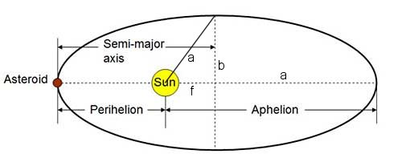

Table of Contents
Deriving Kepler's Laws
Overview
In antiquity, the great mathematician and astronomer Ptolemy had laid out
a system for computing where planets would be found in the sky. It was
based on the theory that the Sun and the planets moved around the Earth in
epicycles, a pattern of circles which are themselves spinning in circles.
It should be noted that his computations actually worked quite well to
predict the night sky. However, the computations were quite messy. In the
16th century, Copernicus pointed out that the calculations could be
simplified if instead it was assumed that the Earth moved around the Sun.
This theory had been considered and rejected by Ptolemy. While Copernicus
was correct that it simplified the calculations, it still required the use
of epicycles. Johannes Kepler discovered that epicycles could be
entirely avoided if instead the planets were assumed to move in
elliptical orbits instead of circular orbits.
Kepler's three laws of
planetary motion are:
- Planetary orbits are ellipses with the Sun at one focus.
- Planets do not move with a constant speed, but the line segment
joining the Sun and a planet will sweep out equal areas in equal
times.
- The square of the period of the orbit of a planet is proportional to
the cube of the semi-major axis of the orbit.
This was an amazing feat given that Kepler did not actually have the
positions of the planets but was working from the data accumulated by
Tycho Brahe on where different planets appeared in the sky on different
days. Kepler published his first two laws in 1609, and the third law in
1619. The laws were not immediately accepted. Part of this was religious
resistance to the idea that the Earth moved about the Sun. Galileo's
conviction for heresy in supporting a Copernican rather than Ptolemaic
view was in 1633. But part of the objections were because there seemed
no reason for the use of ellipses rather than perfect circles. Kepler's
theories slowly gained acceptance during the 17th century.
In 1687, Newton published his Principia in which he demonstrated
that Kepler's three laws were all consequences of the single assumption
that planetary motion is governed by an inverse square attraction
(gravity) toward the Sun. This both sealed the acceptance of Kepler's laws
in the scientific community, and established Newton's theory of gravity,
since it explained all three laws in one simple assumption. While Newton
was well-known in the scientific community prior to the publication of the
Principia, afterward he became much more generally famous, in much
the same way Einstein would be viewed in the 20th century.
The derivation of Kepler's laws from Newton's theory of gravity is
generally considered one of the greatest intellectual achievements in
history.
Newton's Principia does not use calculus, but it does make
extensive use of the infinitesimal techniques Newton used to develop the
calculus. It seems fitting that as the capstone on the calculus sequence,
we go through the development of Kepler's laws from Newton's theory. We
will use modern calculus and differential equations techniques rather than
the infinitesimal arguments Newton used. In fact, we will show that
writing the equations for planetary motion based on Newton's theory of
gravity leads to a non-linear second order system of differential
equations. Along the way, we will deduce Kepler's second law. We will then
use our standard trick for converting parametric
systems to a single equation along with an inspired change of variables to
reduce the non-linear system to a single linear, constant coefficient,
differential equation. We will solve this using the techniques of chapter
2. This solution can be recognized as a conic section, establishing
Kepler's first law. Finally, we will use Kepler's second law in
combination with a formula for area of an ellipse to establish Kepler's
third law.
Acceleration in polar coordinates
It will be most convenient to work in polar coordinates, with the Sun at
the origin and the axes oriented so aphelion, the point where the orbit is
farthest from the Sun, is along $\theta=0$. We write the position of
the orbiting planet in the standard form
$$\text{position} = \langle r\cos(\theta),r\sin(\theta) \rangle.$$
I use $\langle a,b \rangle$ for the vector because we will soon have
enough $()$'s that
it will be helpful to have different separators for vectors.
Here $r=r(t)$ and $\theta=\theta(t)$ are assumed to be functions changing
with time, since the planet is moving. To find the velocity vector, we
differentiate position with respect to time. We use the product rule to
get
$$\text{velocity} = \langle r'\cos(\theta)-r\theta'\sin(\theta),
r'\sin(\theta)+r\theta'\cos(\theta) \rangle.$$
Differentiating again we get acceleration.
$$
\begin{align}
\text{acceleration} &= \langle r''\cos(\theta) - 2r'\theta'\sin(\theta) -
r(\theta')^2\cos(\theta) - r\theta''\sin(\theta),
r''\sin(\theta) + 2r'\theta'\cos(\theta) - r(\theta')^2\sin(\theta) +
r\theta''\cos(\theta) \rangle \\
&= \langle
(r'' - r(\theta')^2\cos(\theta) + (2r'\theta'+r\theta'')(-\sin(\theta)),
(r'' - r(\theta')^2\sin(\theta) + (2r'\theta'+r\theta'')(\cos(\theta))
\rangle \\
&=(r''-r(\theta')^2)\langle\cos(\theta),\sin(\theta)\rangle\quad
+ \quad(2r'\theta' + r\theta'')\langle-\sin(\theta),\cos(\theta)\rangle
\end{align}
$$
Note that our acceleration vector naturally splits into two pieces. Since
the vector $\langle\cos(\theta),\sin(\theta)\rangle$ lies along the radius
from the
origin, we call
$$a_r = r'' - r(\theta')^2$$
the radial component of acceleration. The vector
$\langle-\sin(\theta),\cos(\theta)\rangle$ is normal to the radial vector
and we call
$$a_{\theta} = 2r'\theta' + r\theta''$$
the transverse component of acceleration.
Newton's Law of Gravity
Newton's law of gravity states that the attractive force between two
masses is
$$\frac{GMm}{r^2}$$
where $M$ is the mass of one object, $m$ the mass of the other object, $r$
the distance between the two objects, and $G$ is the gravitational
constant, $G\approx 6.67 \times 10^{-11} m^3/(kg\cdot sec^2).$ We let $M$
be the mass of the Sun and $m$ be the mass of the planet. Since $F=ma$,
the $m$ cancels out and we find
the planet undergoes an acceleration of magnitude $GM/r^2$ toward the Sun.
Since the acceleration is toward the Sun, that means we have $a_r =
-GM/r^2$. On the other hand, $a_{\theta}=0$ since the acceleration is
purely toward the Sun and so there is no transverse component. Using our
formulas for $a_r$ and $a_{\theta}$ from the previous section gives
us a system of two non-linear differential equations for $r$ and $\theta$,
$$
\begin{align}
r''-r(\theta')^2 &= -\frac{GM}{r^2} \\
2r'\theta'+r\theta'' &= 0
\end{align}
$$
Conservation of Angular Momentum
From the second equation we can derive Kepler's second law. The key trick
is to observe
$$
\begin{align}
\frac{d}{dt}(r^2\theta') &= 2rr'\theta' + r^2\theta'' \\
&= r(2r'\theta'+r\theta'') \\
&=ra_{\theta} \\
&=0
\end{align}
$$
So $r^2\theta' = c$ for some constant $c$. Physicists refer to this as the
law of conservation of angular momentum. In a little bit, we will find it
very useful to have
$$
\theta' = \frac{c}{r^2}
$$
to be able to replace $\theta'$ terms by $r$ terms. But first, we will
use this result to establish Kepler's second law.
Kepler's Second Law
In calculus you (should have) learned that the area swept out by a polar
curve is
$$
\text{Area} = \int \frac12 r^2 d\theta.
$$
Treating $r$ and $\theta$ as functions of $t$, so $d\theta = \theta'dt$,
and using the result from the previous section that $r^2\theta' = c$, we
get that the area swept out by the line joining the Sun (at the origin) to
the planet between times $t_0$ and $t_1$ is
$$
\begin{align}
\text{Area} &= \int_{t_0}^{t_1} \frac12 r^2\theta' dt \\
&= \int_{t_0}^{t_1} \frac{c}{2} dt \\
&=\frac{c(t_1-t_0)}{2}.
\end{align}
$$
Hence the area swept out depends only on the length of time, or in
Kepler's terms, the planet sweeps out equal areas in equal times.
Writing An Equation For The Orbit
We now turn our attention to the key equation,
$$r'' - r(\theta')^2 = -\frac{GM}{r^2}.$$
This equation involves $r$ and $\theta$ as functions of time $t$. If we
want to plot the orbit as a whole, instead of determining the
coordinates of the planet at time $t$, it would be better to have an
equation for $r$ as a function of $\theta$. We have our standard trick
to write
$$
\frac{dr}{d\theta} = \frac{r'}{\theta'}.
$$
But this doesn't actually help much since our equations aren't just simple
formulas for $r'$ and $\theta'$. However, there is an inspired change of
variables that makes everything work out neatly. Instead of working with
$r$, we will use $u = 1/r$. Then $\displaystyle u' = -r'/r^2$.
And then
$$
\begin{align}
\frac{du}{d\theta} &= \frac{u'}{\theta'} \\
&= \frac{-r'/r^2}{c/r^2} \\
&= -\frac{r'}{c}
\end{align}
$$
where we used the formula for $\theta'$ we found in the section on
"Conservation of Angular Momentum."
Now since we have a second order equation, we will need to compute the
second derivative of $u$ with respect to $\theta$.
$$
\begin{align}
\frac{d^2u}{d\theta^2} &= \frac{d}{d\theta}\left(\frac{du}{d\theta}\right)
\\
&= \frac{d/dt(du/d\theta)}{d\theta/dt} \\
&= \frac{d/dt(-r'/c)}{\theta'} \\
&= \frac{-r''/c}{c/r^2} \\
&= -\frac{r^2r''}{c^2}.
\end{align}
$$
Now return to our equation
$$
r'' - r(\theta')^2 = -\frac{GM}{r^2}.
$$
Making our standard substitution for $\theta'$ we get
$$
r'' - r\left(\frac{c}{r^2}\right)^2 = -\frac{GM}{r^2}.
$$
Multiply through by $\displaystyle -\frac{r^2}{c^2}$ to obtain
$$
-\frac{r^2r''}{c^2} + \frac{1}{r} = \frac{GM}{c^2}.
$$
Now substitute in our formulas for $u$ and $\displaystyle
\frac{d^2u}{d\theta^2}$ to get
$$
\frac{d^2u}{d\theta^2} + u = \frac{GM}{c^2}.
$$
So we have found a nice constant coefficient linear differential equation.
And we can solve this using the techniques of chapter 2 to obtain
$$
u = \frac{GM}{c^2} - A\cos(\theta - \theta_0),
$$
where $A$ is an arbitrary constant. Changing back to $r = 1/u$ we get
$$
r = \frac{1}{GM/c^2 - A\cos(\theta - \theta_0)}.
$$
Remember that we defined our coordinate system so aphelion occurs at
$\theta = 0$. Since $r$ will be largest when the denominator is smallest,
and $\cos$ takes its maximum value at 0, we must have $\theta_0=0$ so the
orbit of the planet in polar coordinates is
$$
r = \frac{1}{GM/c^2 - A\cos(\theta)}.
$$
Kepler's First Law
Isaac Newton would have recognized the equation above as the general
equation for a conic section in polar coordinates with a focus at the
origin and major axis along the $x$-axis. And that
establishes Kepler's first law, that the orbit of the planets is an
ellipse with the Sun at one focus. Now the ellipse is not the only conic
section. But it is the only conic section with a closed curve, so a planet
that repeats the same orbit must follow an ellipse.
Since polar forms of conic sections has drifted out of the curriculum at
most schools, you may be curious about how to recognize the formula above
describes a conic section. The algebra is straightforward, but rather
messy. We start with
$$
r = \frac{1}{GM/c^2 - A\cos(\theta)}.
$$
We will assume $A < GM/c^2$, which corresponds to an ellipse ($A >
GM/c^2$ is a hyperbola while $A = GM/c^2$ is a parabola). We will find
it convenient to first multiply the fraction on the right top and bottom
by $c^2/(GM)$ to get
$$
r = \frac{c^2/(GM)}{1 - (Ac^2/(GM))\cos(\theta)}.
$$
We can then prepare the equation to switch back to rectangular coordinates
as follows.
$$
\begin{align}
r - (Ac^2/(GM))r\cos(\theta) &= c^2/(GM) \\
r &= c^2/(GM) + (Ac^2/(GM))r\cos(\theta) \\
r^2 &= \left(GM/c^2 + (Ac^2/(GM))r\cos(\theta)\right)^2
\end{align}
$$
Now we can substitute $r^2 = x^2 + y^2$ and $r\cos(\theta)=x$ to get
$$
x^2+y^2 = \left(c^2/(GM) + (Ac^2/(GM))x\right)^2.
$$
This is a quadratic expression, and any second order equation in $x$ and
$y$ corresponds to a conic section (and vice-versa). You can square the
left-hand-side and move terms over to the right and complete the square to
get the standard textbook presentation
$$
\left(\frac{x-f}{a}\right)^2 +
\left(\frac{y}{b}\right)^2 = 1,
$$
but this gets rather messy and I've decided trying to follow the
manipulations is more likely to confuse than enlighten, so we'll stop
here. You can look at problems 23-25 which sketch out the algebra.
The ratio $Ac^2/(GM)$ is called the eccentricity of the orbit. If the
eccentricity is less than 1, the orbit is an ellipse. If the eccentricity
is greater than 1 it is a hyperbola, and if the eccentricity is exactly 1
it is a parabola. Now while it is possible for an extra-solar object to
pass through the solar system with such a high velocity that it follows a
hyperbolic trajectory, the odds against such an event are literally
"astronomical." What has been observed is that a comet which has a very
eccentric orbit gets disturbed by the gravity of a planet to increase its
speed (and hence its eccentricity) to move from an eccentricity of just
under 1 to just over. Since the new trajectory has eccentricity so close
to 1, astronomers typically call these parabolic trajectories, even though
they are technically hyperbolic.
Newton understood
that his work should also apply to comets, but had difficulty getting
predictions that matched with observation. The trouble is that cometary
orbits typically get affected by the gravity of the planets. Newton's
friend, Edmund Halley, worked out those details, which led to his ability
to predict the return of the comet that now bears his name.
UPDATE
I wrote that the odds against seeing an extra-solar object on a hyperbolic
orbit were astronomical in 2014.
In 2017, asteroid 1I/2017 U1, of interstellar origin was observed on exactly
such a hyperbolic orbit. The object was named 'Oumuamua (after the Hawaiian
word for scout). In fact, astronomers believe that such objects are more
common than I realized, but we had never spotted one before. You can read
more online if you are interested. I recommend the
Wikipedia article on Interstellar Objects.
Area Of An Orbit
Kepler's third law relates the period, the time it takes the planet to
complete an orbit, to the semimajor axis of the ellipse. Kepler's second
law relates time to the area swept out, and we also know how to find the
area of an ellipse given the major and minor axes. We will use this to
find two formulas for the area of an orbit, and then use those to deduce
Kepler's third law.

The standard formula for area of an ellipse is $\pi ab$ where $a$ is the
semi-major axis and $b$ is the semi-minor axis. If we worked out the full
formula for the ellipse in the previous section we could get $a$ and $b$
from the equation, but there is an easier way, that involves developing a
new and pretty formula for area in terms of perihelion and aphelion.
Perihelion is the closest distance from the orbit to the Sun (from the
ellipse to the focus), while aphelion is the farthest distance. The
diagram above, which I modified from a
Science
Buddies diagram, is not
accurate in that the Sun should properly be much closer to the left edge
for the indicated orbit, but it gets across the relationships between the
major and minor axes and perihelion and aphelion. In particular, if we let
$f$ be the focal distance, the distance from the Sun at a focus to the
center of the ellipse, $a$ be the semi-major axis, and $b$ the semi-minor
axis, then perihelion is $a-f$ while aphelion is $a+f$, so the semi-major
axis is the arithmetic mean of perihelion and aphelion,
$$
a = \frac{\text{perihelion} + \text{aphelion}}{2}.
$$
To get the semi-minor axis, we recall that the defining property of an
ellipse is that the sum of the distances from any point on the ellipse to
the two foci is a constant, which is $2a$, the major axis. So by
symmetry, the distance from the Sun to the ellipse along the hypotenuse
in the diagram is $a$, while the sides of the right triangle are $f$ and
$b$. Then we have
$$
\begin{align}
b &= \sqrt{a^2 - f^2} \\
&=\sqrt{(a-f)(a+f)} \\
&=\sqrt{\text{perihelion}\times\text{aphelion}}.
\end{align}
$$
So the semi-minor axis, $b$, is the geometric mean of the perihelion and
aphelion. Finally, the area is $\pi$ times the product of the arithmetic
and geometric means of the perihelion and aphelion,
$$
\text{Area} = \pi\frac{\text{perihelion} + \text{aphelion}}{2}
\sqrt{\text{perihelion} \times \text{aphelion}}.
$$
So now we need to find the perihelion and the aphelion. Fortunately, we
can do this easily from the polar form we derived above,
$$
r = \frac{1}{GM/c^2 - A\cos(\theta)}.
$$
Since $r$ is the distance to the Sun, perihelion is just the minimum value
of $r$, while aphelion is the maximum value of $r$. Since a fraction is
smallest when the denominator is largest, to find perihelion we just need
to maximize $GM/c^2 - A\cos(\theta)$. But since we know $-1 \le
\cos(\theta) \le 1$, we can see that the maximum value will be
$GM/c^2 + A$ when $\cos(\theta) = -1$, so perihelion will be
$$
\text{perihelion} = \frac{1}{GM/c^2 + A}.
$$
We similarly find
$$
\text{aphelion} = \frac{1}{GM/c^2 - A}.
$$
Then we plug these into our area formula to get
$$
\begin{align}
\text{Area} &= \pi
\frac12\left(\frac{1}{GM/c^2 + A}+\frac{1}{GM/c^2 - A}\right)
\sqrt{\left(\frac{1}{GM/c^2 + A}\right)\left(\frac{1}{GM/c^2 - A}\right)}
\\
&=\pi\left(\frac{GM/c^2}{(GM/c^2)^2 - A^2}\right)
\frac{1}{\sqrt{(GM/c^2)^2 - A^2}} \\
&=\pi \frac{GM/c^2}{\left( (GM/c^2)^2 - A^2 \right)^{3/2}}
\end{align}
$$
Kepler's Third Law
From the above we can compute
$$
\begin{align}
\text{semi-major axis} &= \frac{\text{perihelion} + \text{aphelion}}2 \\
&= \frac{1}{2}\left(\frac{1}{GM/c^2 + A}+\frac{1}{GM/c^2 - A}\right)
\\
&=\frac{GM/c^2}{(GM/c^2)^2 - A^2}.
\end{align}
$$
We want to relate this to the orbital period $T$, the time it takes the
planet to complete an orbit. In the section "Kepler's First Law," we
deduced that the area swept out in a time $t$ was $ct/2$. So in time $T$,
we sweep out area $cT/2$. But this must be the area of the entire orbit,
which we computed in the previous section. So
$$ \begin{align}
\frac{cT}{2} &= \pi \frac{GM/c^2}{\left((GM/c^2)^2 - A^2 \right)^{3/2}} \\
T &= 2\pi \frac{GM/c^3}{\left( (GM/c^2)^2 - A^2 \right)^{3/2}} \\
T^2 &= 4\pi^2 \frac{(GM)^2/c^6}{\left( (GM/c^2)^2 - A^2 \right)^3} \\
T^2 &= \frac{4\pi^2}{GM}\frac{(GM)^3/c^6}{\left( (GM/c^2)^2 - A^2
\right)^3} \\
T^2 &= \frac{4\pi^2}{GM}\left(\frac{(GM)/c^2}{(GM/c^2)^2 - A^2}\right)^3
\\
T^2 &= \frac{4\pi^2}{GM}(\text{semi-major axis})^3.
\end{align}
$$
So the orbital period squared is proportional to the semi-major axis
cubed, with the constant of proportionality $\displaystyle
\frac{4\pi^2}{GM}$.
Note that we have not only established Kepler's third law, we've also
worked out the specific constant of proportionality in terms of
physical constants. This enables us to "weigh" the Sun.
An accurate determination of the semi-major axis of
the Earth's orbit
was made based on measurements taken during the transits of Venus
in 1761 and 1769. An accurate measurement for $G$ was carried out by Henry
Cavendish in 1798 using a torsion balance. Since the orbital period of the
Earth is 1 year, from this information we are able to measure the mass of
the Sun.
©1994-2026 Andrew G. Bennett